First Day (ORIENTATION) at DICT
During the orientation at the Department of Information and Communications Technology (DICT), we are provided with a comprehensive overview of the department's goals, values, and initiatives. The orientation serves to familiarize the interns with the organization's vision and mission, as well as the core values that guide their work. The Admin, Ms. Janet Arlene B. Soliman leads the orientation, addresses the code of conduct, work ethics, and expectations within DICT, ensuring that all participants understand their roles and responsibilities as members of the organization.
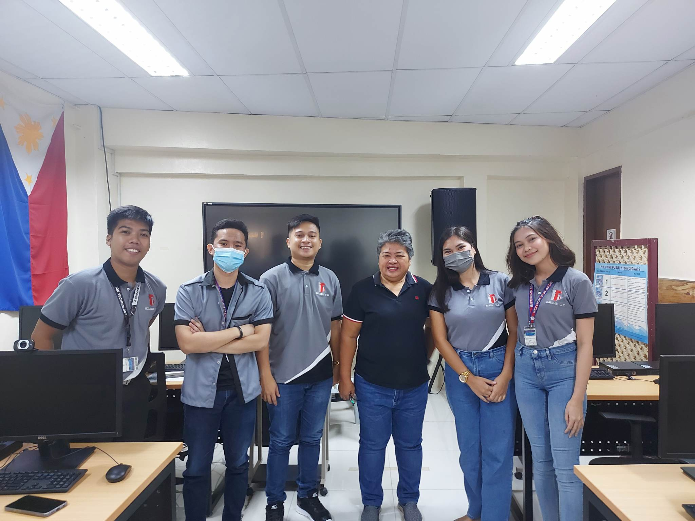Assigned as iLCDB - Cybersecurity Advocate
As an iLCDB (Cybersecurity Advocate), I played an active role in promoting cybersecurity awareness and advocating for safe online practices. I contributed to various initiatives aimed at educating individuals and organizations about the importance of protecting their digital assets and maintaining a secure online presence.

Webinars
As an iLCDB (Cybersecurity Advocate), I actively participated in webinars organized by the Department of Information and Communications Technology (DICT) to enhance my knowledge and skills in the field of cybersecurity. These webinars provided valuable insights, updates, and practical tips from industry experts and thought leaders
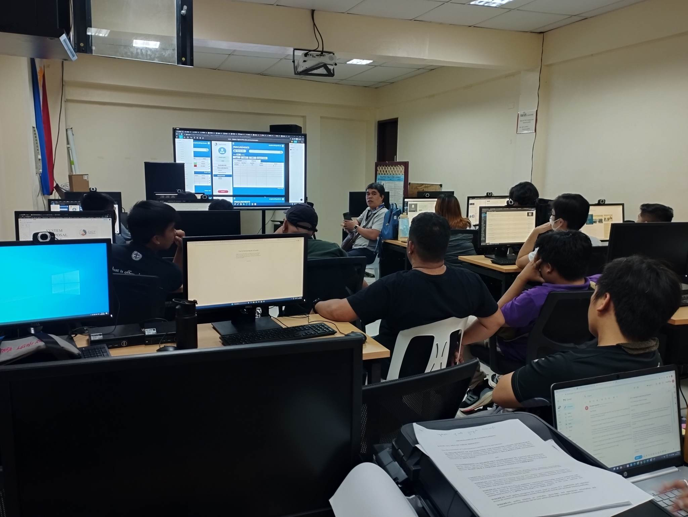Cybersecurity Awareness and Data Privacy Orientation
Reflecting on the Cybersecurity Awareness and Data Privacy Orientation we conducted, I am filled with a sense of accomplishment and fulfillment. The session was an important milestone in our efforts to promote a culture of cybersecurity and protect sensitive information.
During the orientation, we delved into various aspects of cybersecurity, enlightening our audience about the potential risks and providing practical measures to enhance online safety. We discussed the significance of strong passwords, the dangers of phishing attacks, and the importance of regularly updating software to mitigate vulnerabilities. The interactive nature of the session allowed for engaging discussions and sharing of real-life examples, which helped drive the importance of cybersecurity home.
Equally significant was our emphasis on data privacy. We emphasized the rights and responsibilities associated with handling personal information, underlining the need for transparency, consent, and proper data management practices. By highlighting the potential implications of data breaches, we motivated the participants to take proactive steps to protect sensitive data and respect privacy rights.
Last Presentation for DICT Supply Inventory Management System
I am filled with a profound sense of accomplishment and gratitude. It was a defining moment that showcased the culmination of our hard work, collaboration, and unwavering commitment to delivering a comprehensive and efficient solution. Stepping into the presentation room, I was both excited and nervous. The room was filled with esteemed stakeholders, OJT-Coordinator Mr. Riane Billera, and key decision-makers, eager to see the outcome of our efforts. As we began the presentation, I felt a surge of confidence, knowing that our team had poured countless hours into developing a system that addressed the unique challenges of supply inventory management. Throughout the presentation, our team's passion and expertise shone through. We articulated the system's features, benefits, and the meticulous planning and development process behind it. We showcased the user-friendly interface, streamlined workflows, and the integration of advanced analytics for data-driven decision-making. The audience was captivated by the system's capabilities and the potential impact it could have on optimizing supply management processes.
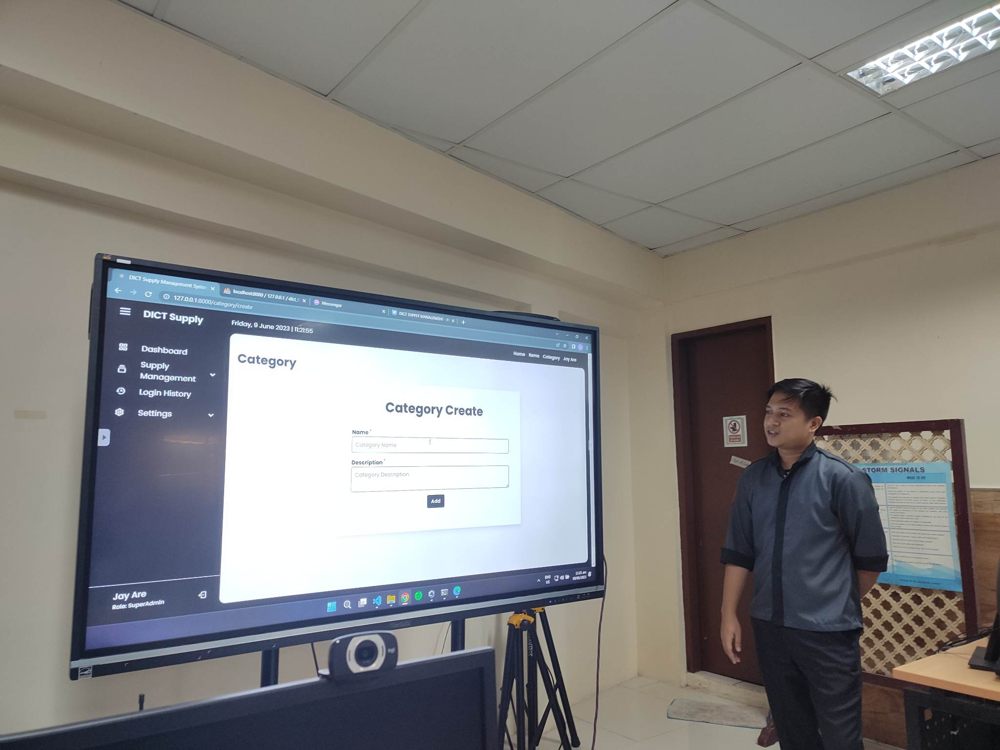 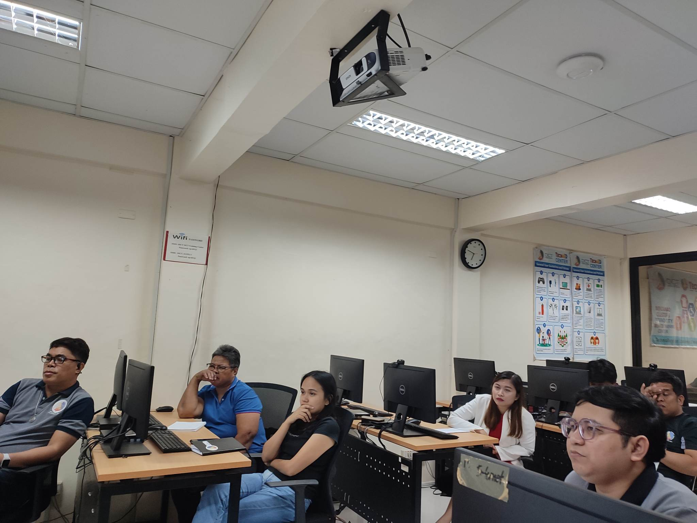 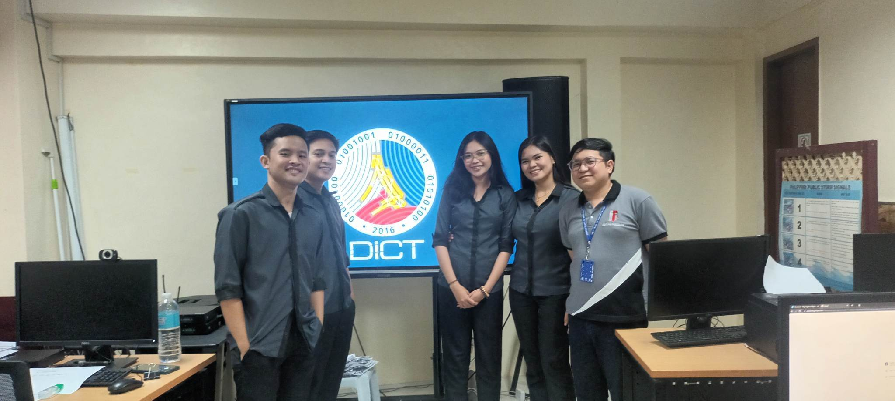HCDC - DICT INTERNS
I feel incredibly fortunate to have had the opportunity to work alongside such talented and inspiring individuals. From the very beginning, it was evident that our team was a melting pot of diverse backgrounds, skills, and perspectives. This diversity became our strength, enabling us to approach challenges from various angles and come up with innovative solutions. The supportive environment we fostered allowed us to freely exchange ideas, provide feedback, and push each other to reach new heights. As this chapter comes to a close, I am filled with a profound sense of gratitude for the experiences and memories we have created together. The lessons learned, both technical and interpersonal, will undoubtedly shape our future endeavors. I have no doubt that each member of our DICT intern team will go on to accomplish great things, armed with the skills, knowledge, and connections gained during our time together. To my remarkable colleagues, thank you for the unforgettable journey we shared. I will cherish the moments we spent as DICT interns, and I am excited to witness the bright futures that lie ahead for each of us.
 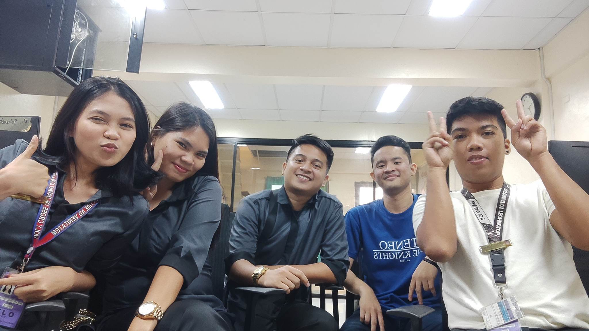
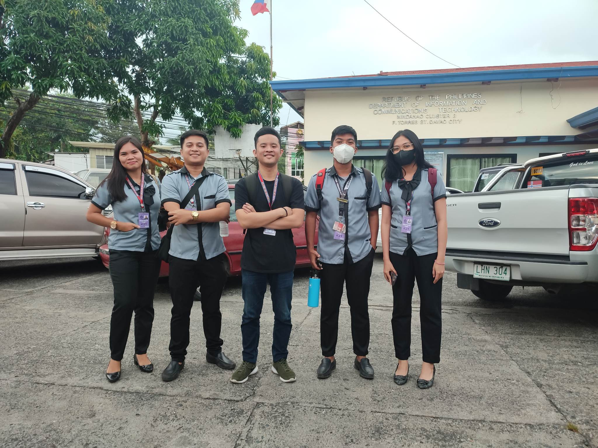
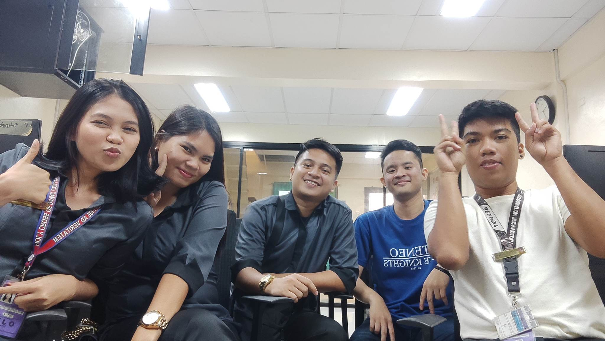
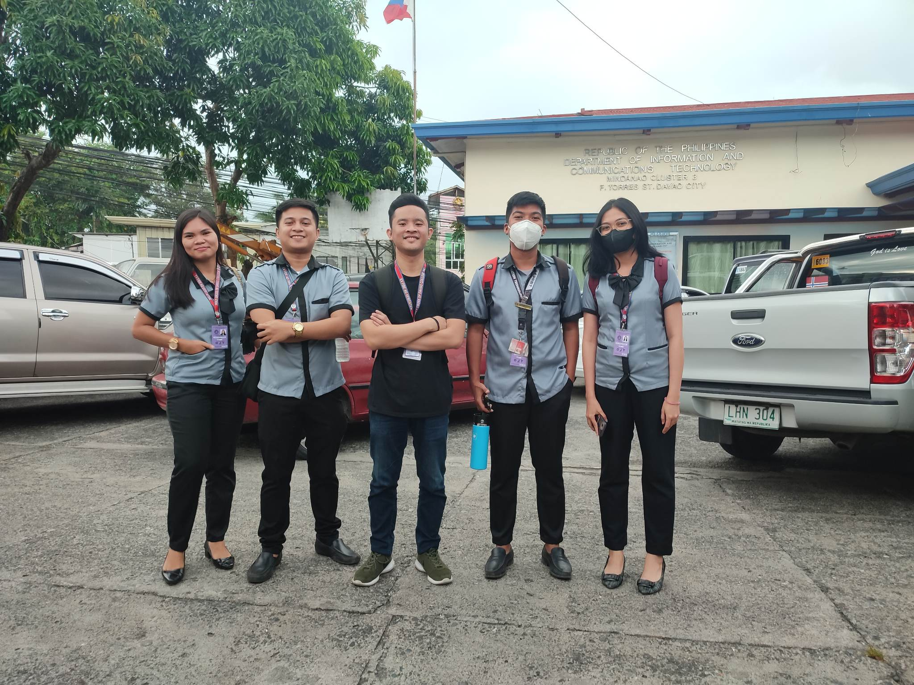
 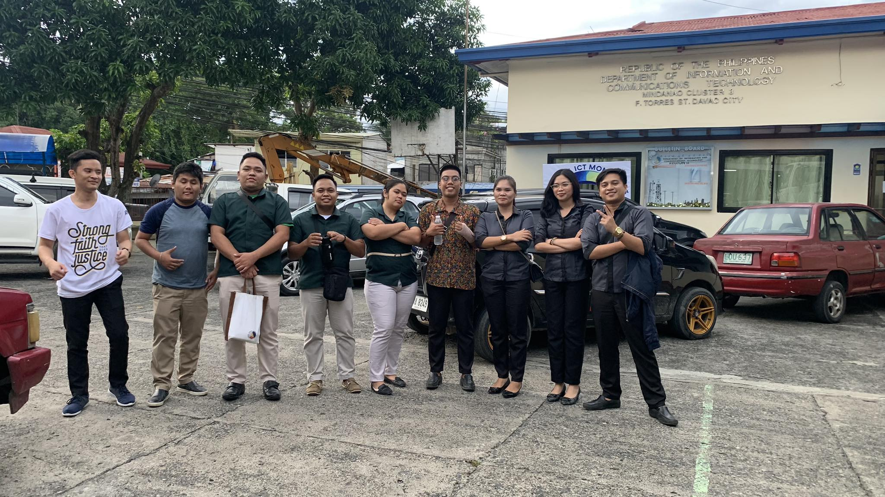
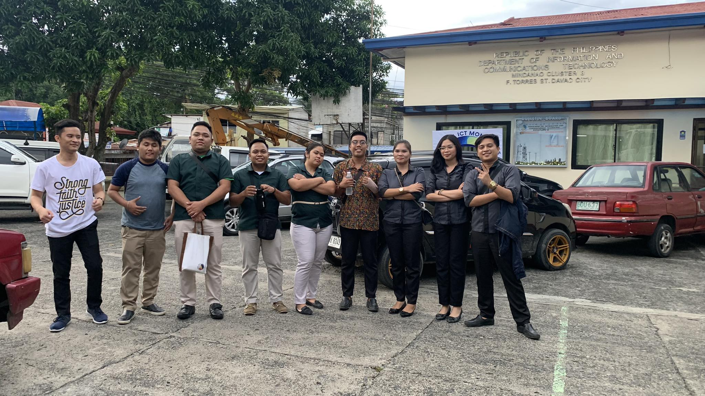